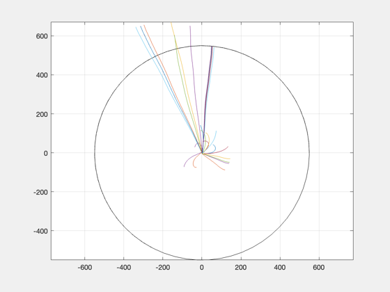
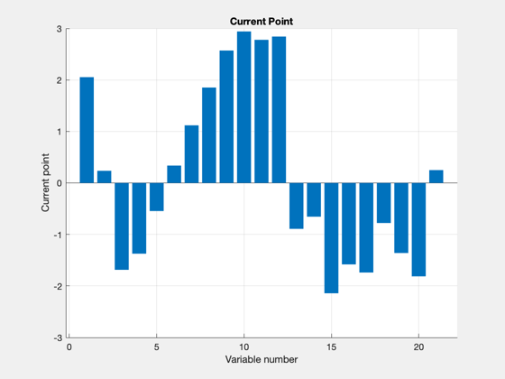
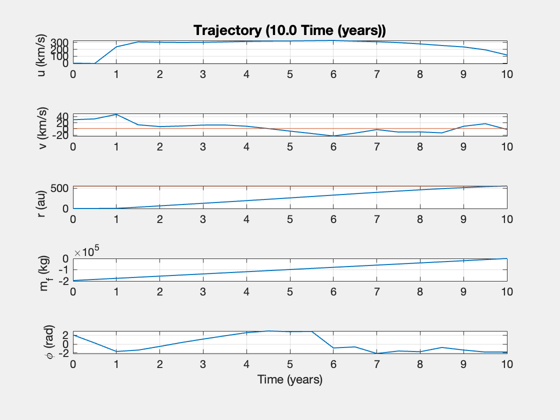
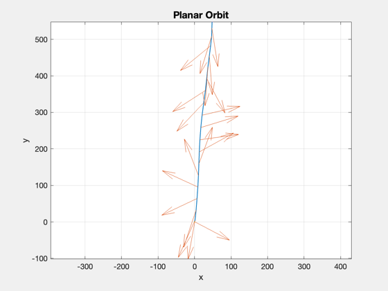

Contents
Planar orbit optimization to outside the solar system, 550 AU
Calculate the optimal thrust to achieve a planar trajectory to the desired final orbit, assuming a certain specific impulse (exhaust velocity) and specific power for the engine.
A good solution has a smooth change in phi and linear change in u (up until switch point, then down). If there is excess radial velocity on arrival, try increasing the transit time.
See also: PlanarHelioOptimal, StraightLineOptimal, StraightLineReport
%-------------------------------------------------------------------------- % Copyright 2017 Princeton Satellite Systems % All rights reserved. %--------------------------------------------------------------------------
First set up the problem and check the guess for thrust/power
Controls
repeatPrevious = false; % Parameters nYears = 10; % transit time in years payload = 1500; % payload mass (kg) uExhaust = 100; % km/s sigma = 1000; % W/kg eta = 0.5; % Total fusion power to thrust au = Constant('au'); year = 365.25*86400; % Calculate the optimal planar solution d = PlanarHelioOptimal; d.rF = 550*au; d.tF = nYears*year; d.mP = payload; % payload mass (kg) d.uE = uExhaust; % exhaust velocity, km/s d.f = 0.02; % fuel structural fraction (tanks) % additional fields for optimization d.sigma = sigma; % specific power, W/kg d.eta = eta; % thrust efficiency vRef = sqrt(d.mu/d.rF); d.scale = [1/d.rF*1e3;1/vRef;1/vRef]; d.scale = [1;1e3;1e3]; d.nPts = 20; % initial guess for thrust: use constant accel in limit as sigma increases % assume spacecraft leaves along the tangent to the destination distance = sqrt(d.rF^2-d.r0^2); thrustE = ThrustElectric( d.tF, distance, d.uE, 1e6, d.f, d.eta, d.mP ); fprintf('Initial guess: Thrust = %g N, power = %g MW\n',thrustE,0.5*thrustE*d.uE/d.eta*1e-3) d.thrustMax = thrustE; % maximum thrust (N)
Initial guess: Thrust = -244.19 N, power = -24.419 MW
Evaluate
If the thrust guess for the mission is reasonable, try the optimization
if repeatPrevious [phi, thrust, t, data] = PlanarHelioOptimal( d, 4000, 'iter-detailed', thrust0, phi0 ); else [phi, thrust, t, data] = PlanarHelioOptimal( d ); end phi0 = phi; thrust0 = thrust; data.flag data.fmincon % Report StraightLineReport( data ); return;
-223.4 -64.319 138.5 47.186 2.1828e-10
-223.4 -64.319 138.5 47.186 2.1828e-10
First-order Norm of
Iter F-count f(x) Feasibility optimality step
0 43 -7.399506e+05 7.522e+10 3.241e+03
1 86 -2.071360e+05 7.346e+10 3.210e+03 7.992e-01
-62.863 -64.941 140.36 58.978 -1.819e-11
2 129 -2.044719e+05 7.170e+10 2.739e+03 5.819e-01
-62.061 -61.792 137.04 70.684 9.0949e-11
3 173 -2.044780e+05 7.032e+10 2.506e+03 2.740e+00
-62.063 -48.59 115.85 79.967 -4.0018e-11
4 217 -2.044817e+05 6.657e+10 2.348e+03 2.923e+00
-62.064 -14.785 64.011 104.98 6.1846e-11
5 261 -2.044822e+05 6.488e+10 2.140e+03 3.072e+00
-62.064 -6.5727 50.472 116.33 -2.5466e-11
6 305 -2.044824e+05 6.473e+10 2.042e+03 2.957e+00
-62.064 7.3685 43.06 117.3 7.276e-11
7 349 -2.044826e+05 6.208e+10 1.935e+03 2.340e+00
-62.064 25.652 33.494 135.01 4.3656e-11
8 394 -2.044826e+05 6.159e+10 1.918e+03 1.681e+00
-62.064 31.919 33.36 138.31 -1.0914e-11
9 438 -2.044827e+05 6.099e+10 1.830e+03 1.845e+00
-62.064 44.586 31.037 142.33 1.4552e-11
10 482 -2.044827e+05 6.021e+10 1.791e+03 2.355e+00
-62.064 38.481 29.583 147.5 4.0018e-11
11 527 -2.044827e+05 6.010e+10 1.765e+03 8.896e-01
-62.064 38.559 28.656 148.29 -1.4552e-11
12 576 -2.044827e+05 5.996e+10 2.934e-05 4.218e-01
-62.064 39.178 32.244 149.22 6.1846e-11
13 622 -2.044827e+05 5.994e+10 2.933e-05 2.314e-01
-62.064 38.92 32.173 149.33 -1.0914e-11
14 665 -2.044823e+05 2.686e+10 1.332e-02 7.370e+00
-62.064 313.47 -61.175 729.53 -9.4587e-11
15 721 -2.044823e+05 2.578e+10 2.892e-05 1.535e-02
-62.064 309.14 -61.02 722.33 1.819e-11
16 765 -2.044823e+05 2.578e+10 2.892e-05 7.186e-04
-62.064 309.11 -61.013 722.31 3.2742e-11
17 809 -2.044823e+05 2.554e+10 2.895e-05 1.831e-01
-62.064 303.21 -59.513 720.74 -4.7294e-11
18 852 -2.044826e+05 2.095e+10 2.923e-05 1.407e+00
-62.064 240.18 -43.302 690.01 5.457e-11
19 895 -2.044828e+05 1.568e+10 2.944e-05 1.929e+00
-62.064 209.11 -23.38 654.82 -2.5466e-11
20 938 -2.044829e+05 1.045e+10 2.963e-05 2.422e+00
-62.064 168.67 -18.545 619.89 -1.4552e-11
21 984 -2.044830e+05 7.028e+08 2.970e-05 1.556e+00
-62.064 116.86 -1.7471 545.3 -1.4552e-11
22 1038 -2.044829e+05 1.592e+08 2.962e-05 2.173e-02
-62.064 118.29 -1.6825 548.94 3.638e-12
23 1087 -2.044828e+05 3.973e+07 2.955e-05 1.073e-02
-62.064 118.45 -1.6654 549.73 1.4552e-11
24 1136 -2.044828e+05 8.413e+06 2.948e-05 5.046e-03
-62.064 118.43 -1.6596 549.94 2.5466e-11
25 1191 -2.044827e+05 1.923e+06 2.941e-05 2.701e-03
-62.064 118.37 -1.657 549.99 7.276e-11
-62.064 118.37 -1.657 549.99 7.276e-11
Optimization completed: The relative first-order optimality measure, 8.862686e-09,
is less than options.OptimalityTolerance = 1.000000e-05, and the relative maximum constraint
violation, 2.557036e-05, is less than options.ConstraintTolerance = 5.000000e-05.
Planar optimization results:
----------------------------
Destination: 550.0 AU
sigma: 1000 W/kg
uE: 100 km/s
eta: 0.5
f: 0.02
Duration: 3652.5 days
Thrust: -62.1 N
Distance error: -1923398.293 km
Velocity errors: [118.367;-2.92704] km/s
Payload: 1500 kg
Engine: -6206.4 kg
Dry mass: -8623.58 kg
Fuel: -195859 kg
Total mass: -204483 kg
Total DV: 316.598 km/s
Power: -6.2064 MW
Mars Angle: 444.997 deg
Earth Angle: 3600 deg
ans =
1
ans =
struct with fields:
iterations: 25
funcCount: 1191
constrviolation: 1.9234e+06
stepsize: 0.0027006
algorithm: 'interior-point'
firstorderopt: 2.9414e-05
cgiterations: 61
message: 'Local minimum found that satisfies the constraints.↵↵Optimization completed because the objective function is non-decreasing in ↵feasible directions, to within the value of the optimality tolerance,↵and constraints are satisfied to within the value of the constraint tolerance.↵↵<stopping criteria details>↵↵Optimization completed: The relative first-order optimality measure, 8.862686e-09,↵is less than options.OptimalityTolerance = 1.000000e-05, and the relative maximum constraint↵violation, 2.557036e-05, is less than options.ConstraintTolerance = 5.000000e-05.'
bestfeasible: []
Report:
Inputs -- --
Payload 1500 kg
Travel time 10.00 years
Specific Power 1.00 kW/kg
Exhaust velocity 100 km/s
Thrust Efficiency 0.50
Fuel Fraction 0.02
Outputs -- --
Thrust -62.06 N
Total Mass -204482.73 kg
Mass Dry -8623.58 kg
Mass Engine -6206.40 kg
Mass Fuel -195859.14 kg
Flow Rate -0.62 g/s
Power -6.21 MW
Delta V 316.60 km/s
Final Distance 549.99 AU
Final Velocity 118.38 km/s
    Comparison
Compare the solution to a straight line solution with the same parameters. Input data structure
d = StraightLineOptimal; d.mP = payload; % payload mass (kg) d.dF = 1.0*au; % distance traversed, km (1 AU) d.tF = nYears*year; % final time d.uE = uExhaust; % exhaust velocity, km/s d.f = 0.02; % fuel structural fraction (tanks) % additional fields for optimization d.sigma = sigma; % specific power, W/kg d.eta = eta; % thrust efficiency d.v0 = 0; % approx initial velocity (km/s) d.maxThrust = 50; % maximum thrust (N) % Evaluate [tS, thrust, data] = StraightLineOptimal( d ); StraightLineReport( data ); SimulateStraightLineTrajectory( data.mD, data.mF, thrust, d.uE, d.tF, d.v0, tS ) subplot(3,1,1) % text(0.15,25,sprintf('Payload: %d kg',payload)); % text(0.15,20,sprintf('Power: %.2f MW',data.p*1e-6)); % text(0.15,15,sprintf('Thrust: %.2f N',data.thrust)); % text(0.15,10,sprintf('Mass: %.0f kg',data.m0)); yy = axis; hold on; line(yy(1:2),[1 1]*au,'color','r'); %-------------------------------------- % $Id: 4becf960f4f62a891dbbb1e3eaa8f40a53a16fdb $